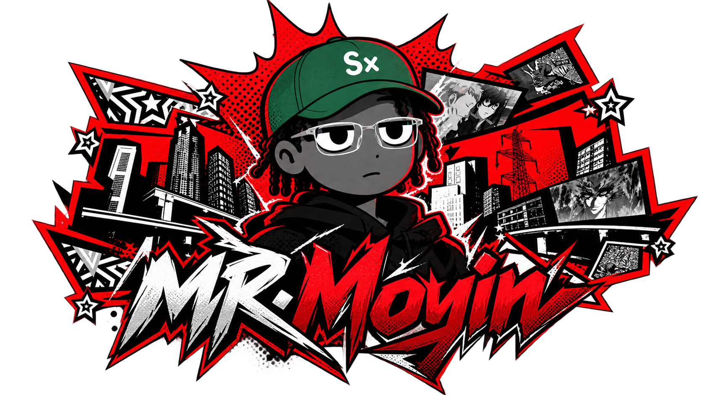

A curious mind.
An offensive
perspective.
I'm MOYIN, a Penetration Tester & Security Researcher.
Exploring how things work. Questioning how they break.
⌘ Penetration testing
⌁ Security research
</> Breaking assumptions
↗ Continuous learning
01 / ABOUT
There's always
another way in.
I'm MOYIN, a Penetration Tester and Security Researcher. You can also call me OxShaD.
This is my corner of the internet: a place for the work, the research, and the notes along the way.
Follow the thinking
02 / CONTINUOUS LEARNING
Knowledge earned.
Curiosity never finished.
A space for the milestones
behind the mindset.
03 / SELECTED PROJECTS
Less theory.
More looking closer.
Experiments, investigations,
and things worth building.
04 / WRITEUPS
The interesting part?
How we got there.
Research deserves
more than a screenshot.
05 / FIELD NOTES